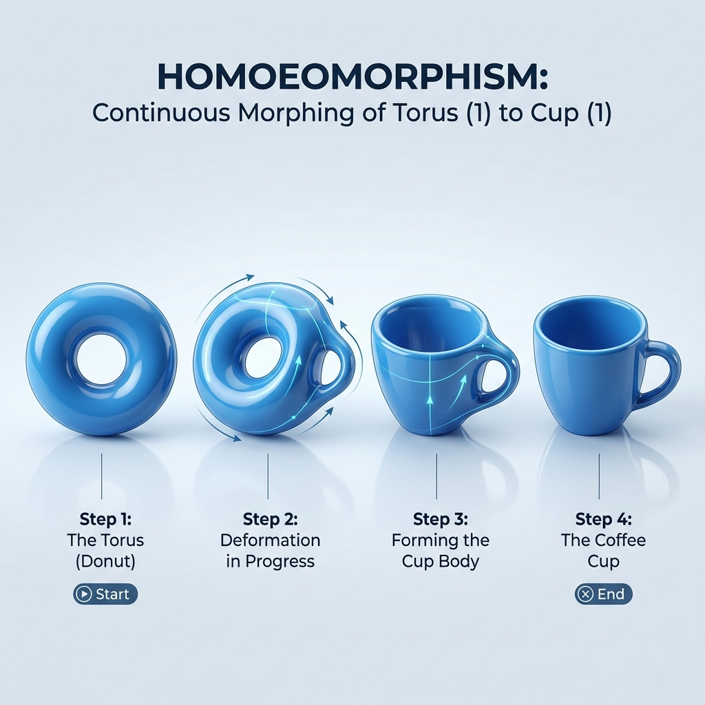
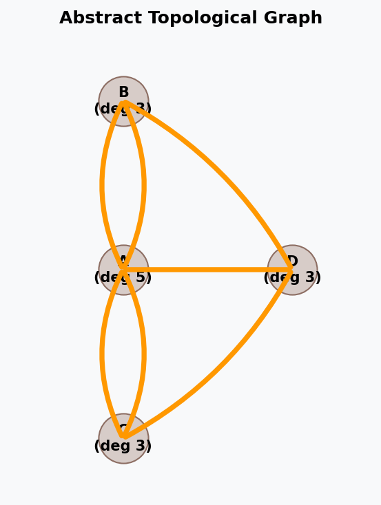

Introduction#
Topology is the branch of mathematics that studies geometric properties and spatial relations that remain unaffected by the continuous change of shape or size of figures. Often described as “rubber-sheet geometry,” topology focuses on qualitative properties like connectivity, holes, and boundaries rather than quantitative measurements like distance, coordinates, or angles.
In data science, machine learning, and deep learning, topology provides robust tools to understand the fundamental “shape” of high-dimensional data, optimize neural network structures, and perform noise-resistant feature engineering.
Core Intuitive Concepts in Topology#
Before diving into formal definitions, it is helpful to understand the core intuitive concepts that topologists use to analyze spaces:
Topological Equivalence (Homeomorphism): In topology, two shapes are considered “equivalent” (or homeomorphic) if one can be continuously deformed, stretched, bent, or twisted into the other without tearing, punching holes, or gluing parts together.
Note
A classic joke is that a topologist cannot tell a coffee mug apart from a donut (torus). Because both shapes contain exactly one hole, a clay coffee mug can be continuously morphed into a donut shape without tearing or pasting.

Topological Invariants: These are properties of a geometric object that remain unchanged under any continuous deformation. Examples include:
The number of holes (Betti numbers)
The number of connected components
Euler Characteristic (\(\chi\))
If two spaces have different topological invariants, they cannot be continuously deformed into one another.
Orientability: A surface is orientable if it has two distinct sides (e.g., an “inside” and an “outside” of a hollow sphere or balloon). A surface is non-orientable if it has only one side. As we will see later, structures like the Möbius strip and the Klein bottle are famous examples of non-orientable manifolds where the concepts of “inside” and “outside” collapse completely.
Coordinate-Free representation: Traditional geometry describes objects using coordinate equations (like \(x^2 + y^2 = r^2\) for a circle). Topology abstractly defines spaces based on how points are grouped together. This is highly useful in Data Science because real-world data is often noisy and shifting, but the global “shape” and connectivity of the data points contain the true underlying signal.
{kind=link}
1. Historical Origin: The Seven Bridges of Königsberg#
The mathematical foundation of both Graph Theory and Topology began in 1736 when Leonhard Euler solved the famous puzzle known as The Seven Bridges of Königsberg.

{kind=link}

The Problem: The city of Königsberg (now Kaliningrad, Russia) was divided by the Pregel River into four landmasses (islands \(A\) and banks \(B\), \(C\), \(D\)), connected by seven bridges. The challenge was to find a walk through the city that crossed each of the seven bridges exactly once and returned to the starting point.
Euler’s Insight: Euler realized that the shape of the landmasses and the length of the bridges were completely irrelevant to the solution. By representing landmasses as vertices (nodes) and bridges as edges, he simplified the map into a network (graph).
The Solution: Euler proved that a path crossing every edge exactly once (now called an Eulerian Path) is only possible if the number of vertices with an odd number of edges (odd degree) is either \(0\) or \(2\):
In Königsberg, all four landmasses had an odd number of bridges connecting them (degrees 5, 3, 3, and 3).
Therefore, it was mathematically impossible to complete the walk.
The Birth of Topology: By discarding coordinates, distances, and angles, and focusing purely on the connectivity and relationships between points, Euler’s analysis was the very first paper in the history of topology—originally referred to as geometry of position (geometria situs).
2. Major Subfields of Topology#
Modern topology is broadly divided into four major subfields, each focusing on different mathematical tools and structures:
General Topology (Point-Set Topology):
Focus: Studies the foundational definitions of topological spaces, open/closed sets, neighborhoods, continuity, convergence, compactness, and connectedness. It generalizes the concepts of calculus without needing a distance coordinate system.
Data Science Link: Forms the mathematical basis for metric spaces and continuous transformations used in data representation.
Algebraic Topology:
Focus: Uses tools from abstract algebra (such as groups, rings, and homology) to analyze and classify topological spaces. It measures the “shapes” and counts the number of holes of different dimensions in a space.
Data Science Link: Directly powers Topological Data Analysis (TDA) and Persistent Homology (using Betti numbers to identify true data patterns vs. noise).
Differential Topology:
Focus: Studies differentiable (smooth) manifolds and differentiable functions. It deals with smooth structures, tangent vectors, and vector fields on manifolds without relying on metric distances.
Data Science Link: Essential for manifold optimization, gradient descent on Riemannian manifolds, and deep learning architectures like Spherical CNNs.
Geometric Topology:
Focus: Studies manifolds and their embeddings in other manifolds, with a strong focus on low-dimensional spaces (dimensions 2, 3, and 4), orientability, and knot theory.
Data Science Link: Explains complex, non-orientable surfaces (like the Möbius strip and Klein bottle) which serve as testing grounds for non-linear dimensionality reduction methods (like UMAP and Isomap).